MY FIVE DREAM VACATION DESTINATIONS
1. New Zealand: Middle-earth Come to Life
I want to visit New Zealand because it offers an unparalleled blend of breathtaking natural landscapes, from
lush forests to dramatic mountains, and is the iconic filming location for the Lord of the Rings trilogy.
The country promises an adventure that combines stunning scenery, rich Maori culture, and incredible outdoor
experiences.
Top 5 Activities:
- Explore Hobbiton Movie Set and immerse yourself in the world of Middle-earth
- Hike the Tongariro Alpine Crossing, considered one of the world's best day walks
- Go bungee jumping in Queenstown, the adventure capital of the world
- Visit Waitomo Glowworm Caves and marvel at the magical underground light show
- Experience Maori cultural performances and traditional hangi feast
 Breathtaking New Zealand Beach
Breathtaking New Zealand Beach
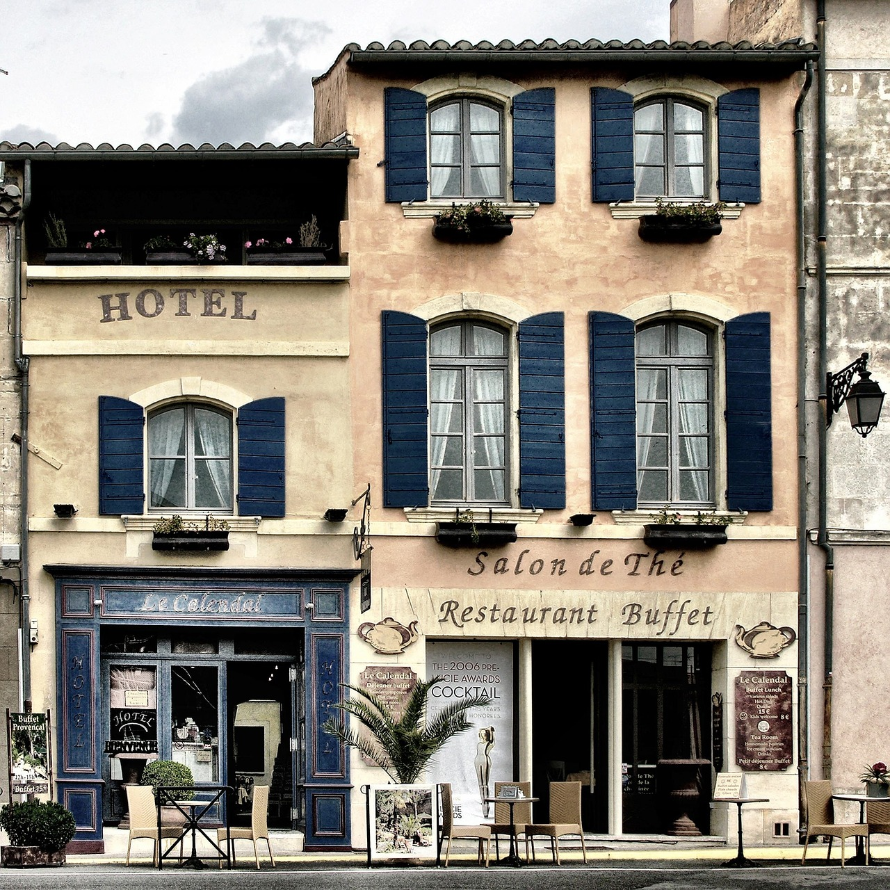
Amazing New Zealand Hotel
Breathtaking New Zealand Accommodation
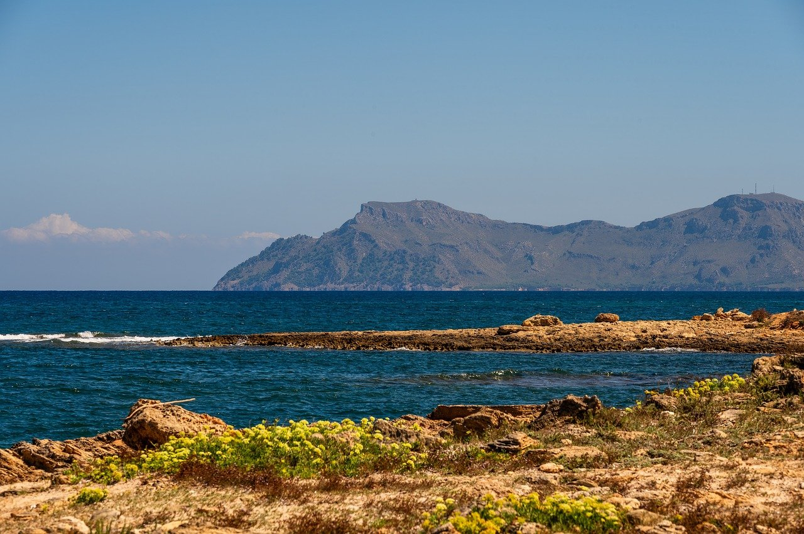
New Zealand Coast
Maori Cultral Hotel
2. Japan: Where Tradition Meets Futurism
Japan fascinates me with its unique ability to preserve ancient traditions while being at the forefront of
technological innovation. From serene temples and zen gardens to bustling Tokyo's neon-lit streets, Japan
offers an unparalleled cultural experience that blends the old and new.
Top 5 Activities:
- Explore the historic temples and gardens of Kyoto
- Experience the sensory overload of Tokyo's Shibuya Crossing
- Attend a traditional tea ceremony and learn about Japanese etiquette
- Witness the cherry blossom season in spring
- Enjoy authentic cuisine, from street food to high-end sushi restaurants
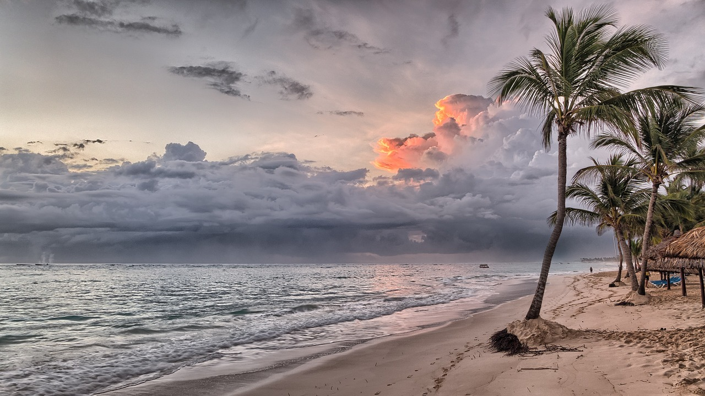
Tokyo: A Blend of Tokyo Beach
Tokyo Coasts Taste
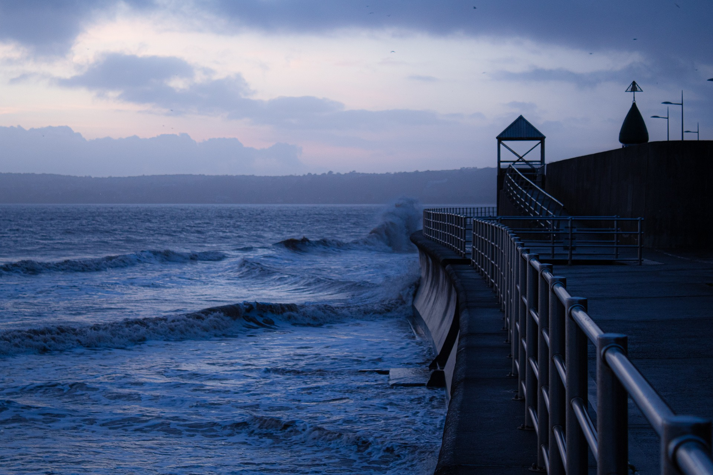
Tokyo: Sea Area
Tokyo: Hotel Exclusive
Tokyo: Something you can't miss
3. Iceland: Land of Fire and Ice
Iceland calls to me with its otherworldly landscapes of volcanic terrain, massive glaciers, geothermal hot
springs, and the mesmerizing Northern Lights. It's a destination that promises unique natural phenomena and
outdoor adventures that can't be experienced anywhere else on Earth.
Top 5 Activities:
- Soak in the Blue Lagoon's geothermal waters
- Drive the Ring Road and explore diverse landscapes in one trip
- Chase the Northern Lights during winter months
- Visit the dramatic Gullfoss waterfall and Geysir geothermal area
- Go glacier hiking or ice cave exploring
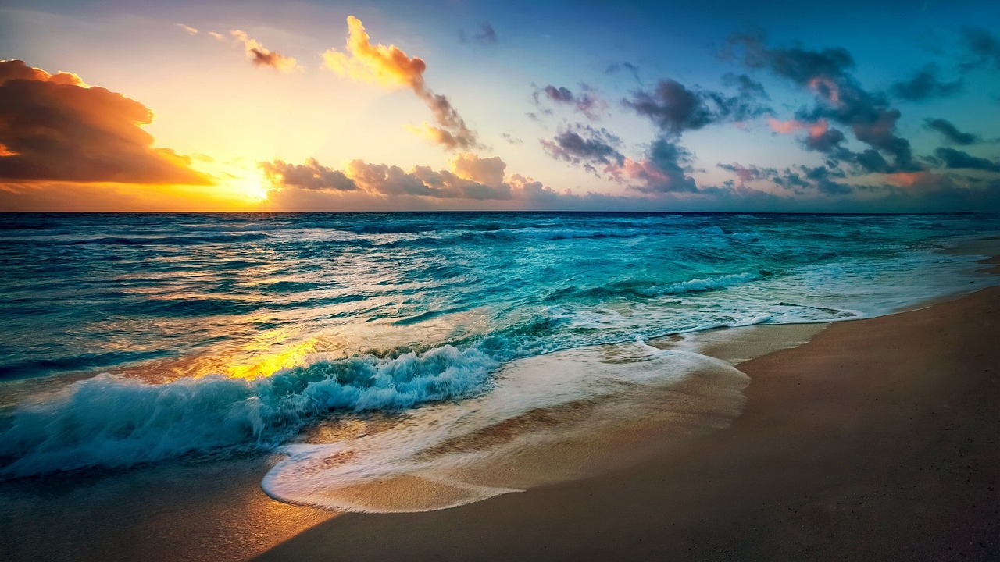
Northern Sun light Over Icelandic Landscape
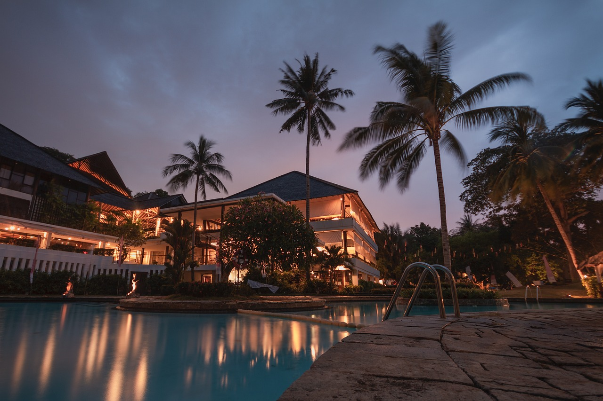
Iceland Hotel One of The Best Hotels
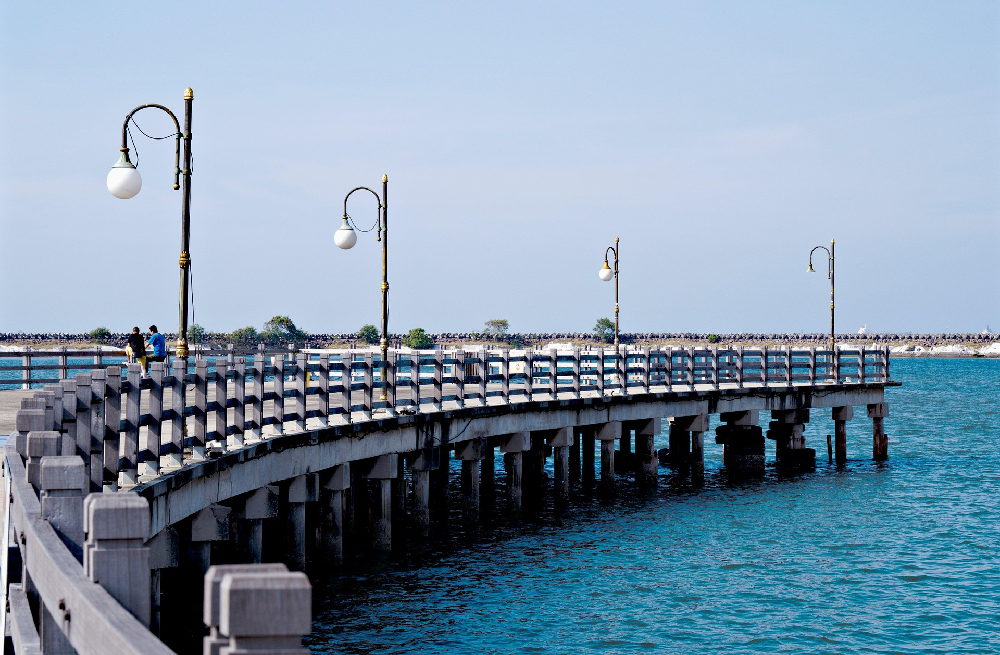
Northern Sun light Over Icelandic Landscape
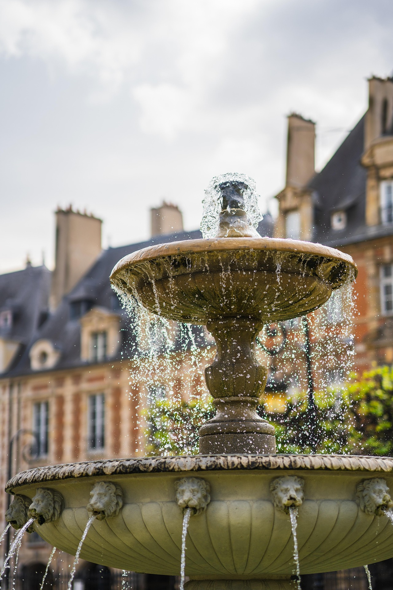
Northern Hotel Downtown Fountain
 Northern Hotel Designs
Northern Hotel Designs
4. Peru: Ancient Mysteries and Natural Wonders
Peru represents a dream destination that combines rich historical heritage, archaeological marvels, and
diverse natural landscapes. The opportunity to explore Machu Picchu, walk in the footsteps of the Inca
civilization, and experience the Amazon rainforest makes Peru an irresistible adventure.
Top 5 Activities:
- Hike the Inca Trail to Machu Picchu
- Explore the Sacred Valley and its traditional Andean communities
- Take a boat trip in the Amazon rainforest
- Visit the historic city of Cusco and its colonial architecture
- Experience local cuisine, including ceviche and pisco sour
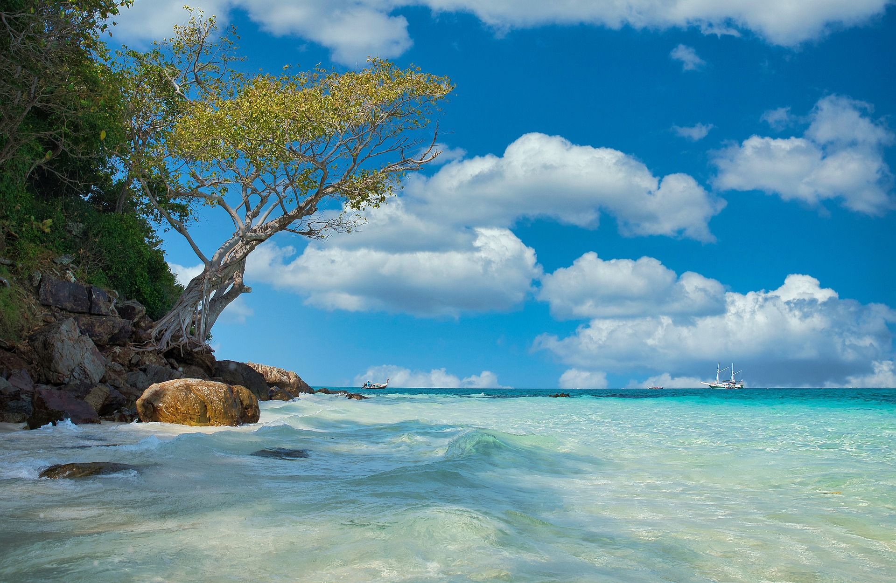
Machu Picchu Coastal Area
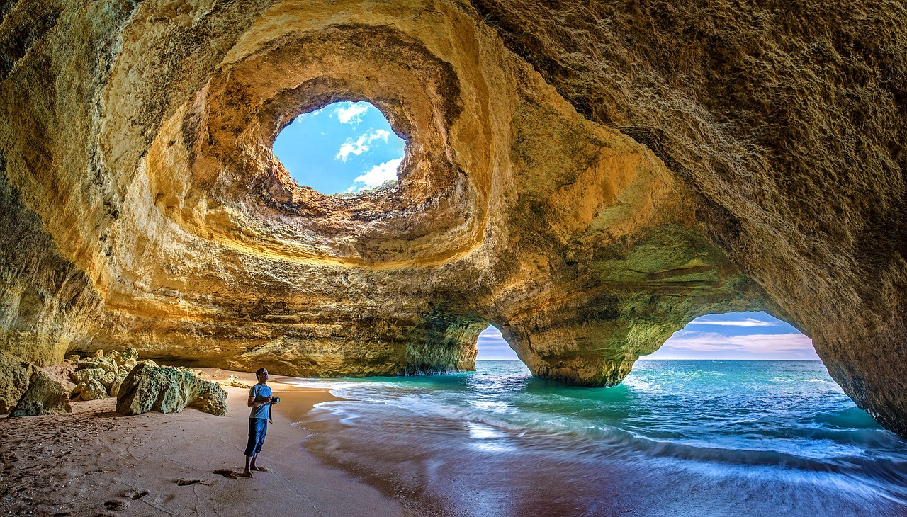
Sacred Valley
 Amazon Beach River
Amazon Beach River
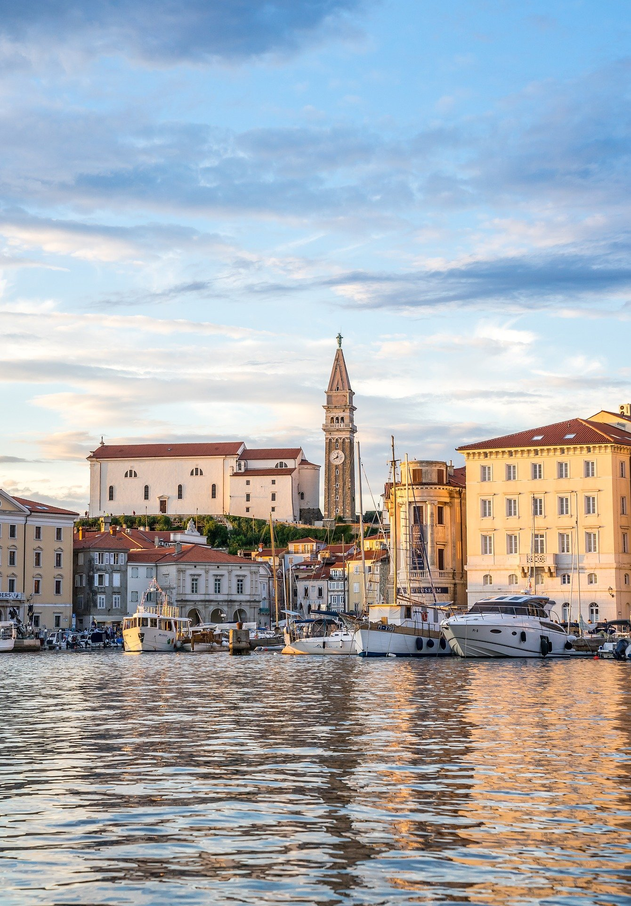
City of Cusco
Tavens Hotel
5. South Africa: Wilderness, Culture, and Diversity
South Africa offers an incredible mix of wildlife, stunning landscapes, vibrant cities, and rich cultural
heritage. From safari adventures in Kruger National Park to the cosmopolitan city of Cape Town and the
scenic Garden Route, this destination promises an unforgettable, multi-faceted experience.
Top 5 Activities:
- Go on a wildlife safari in Kruger National Park
- Explore Cape Town and Table Mountain
- Visit Robben Island and learn about Nelson Mandela's history
- Drive the scenic Garden Route
- Experience wine tasting in Stellenbosch vineyards
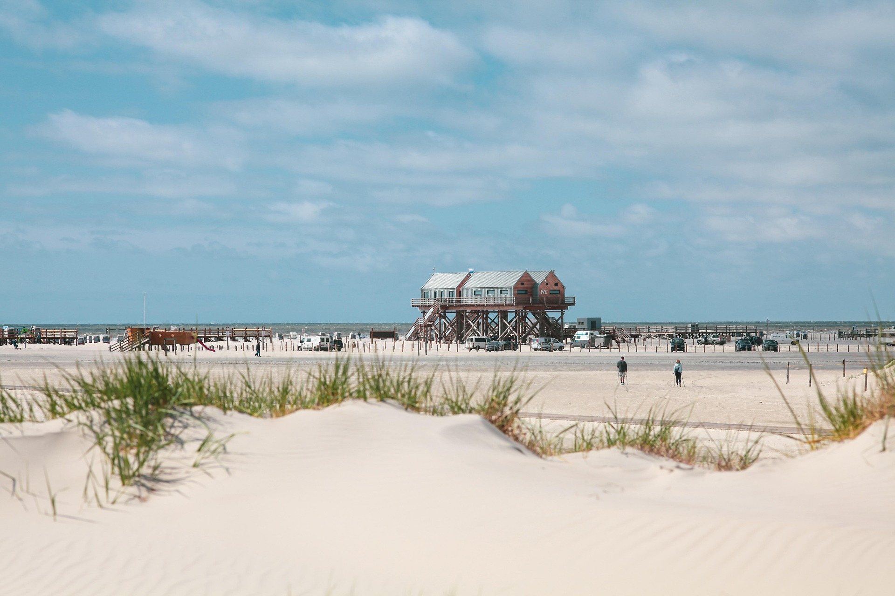
Wildlife Safari in South Africa
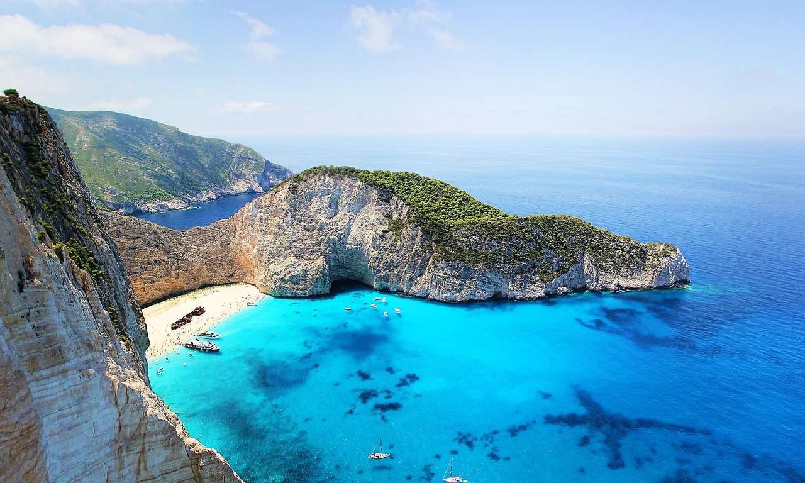
Cape Town Beach
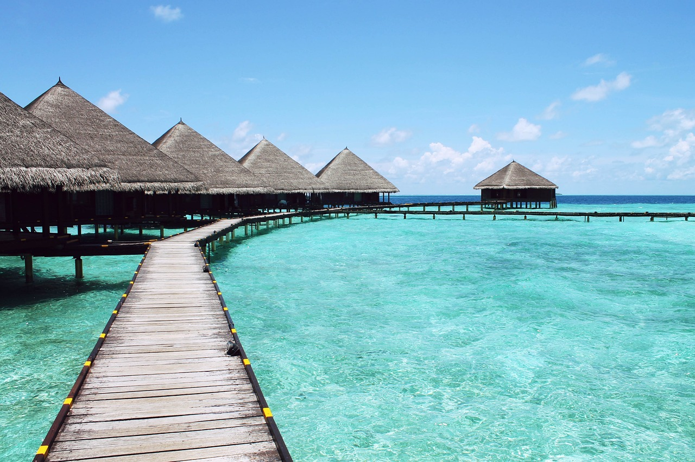
Robben Island Boat Area
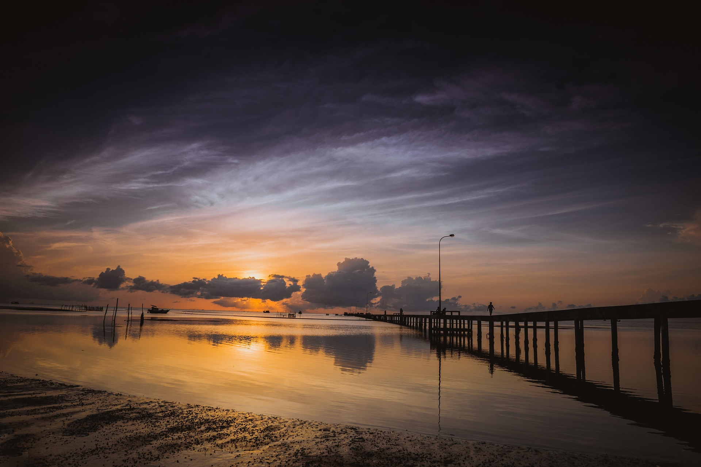
Sunset at Stellenbosch
Stellenbosch Accommodation
Subscribe to Our Travel Newsletter
Stay updated with the latest travel destinations, tips, and special offers. Join our travel community by
subscribing to our newsletter.